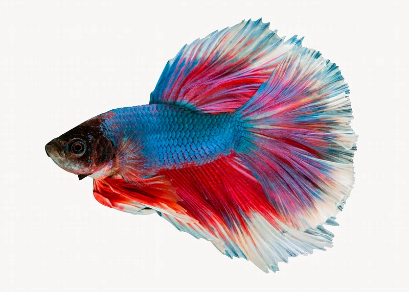

Betta fish, also known as Siamese fighting fish, are vibrant freshwater fish native to Southeast Asia.
Known for their brilliant colors and flowing fins, they are highly territorial and can be aggressive,
especially toward other male bettas. They thrive in small, warm aquariums with minimal water flow
and regular maintenance to ensure good health. Betta fish are popular pets due to their striking
appearance, adaptability, and relatively easy care requirements.
